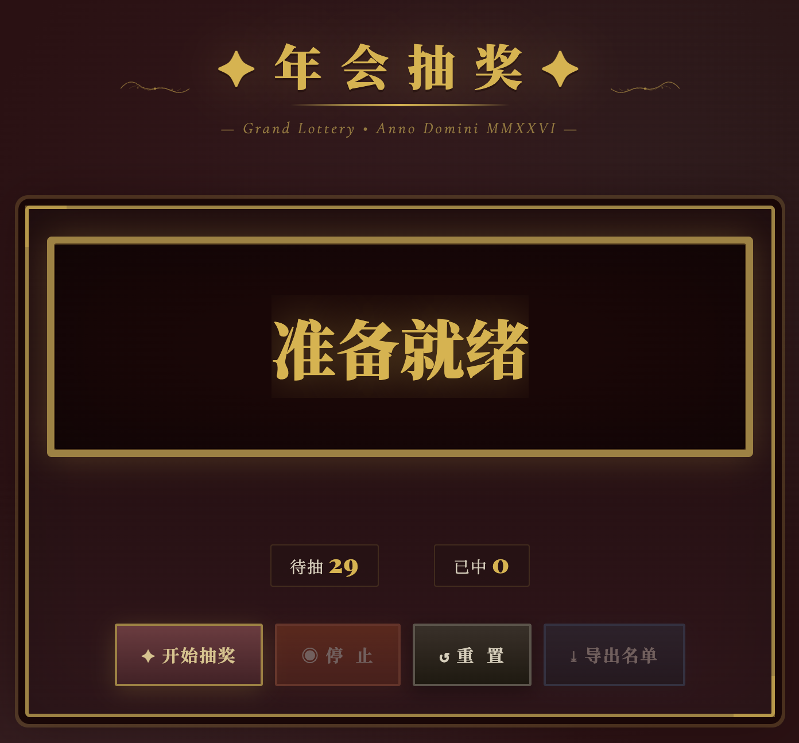

第 01 页 / 共 05 页
从一份名单，到一个现场网页
年会抽奖
网页 App
任务：读取根目录的年会抽奖名单.xlsx，让 AI 生成一个可直接打开、可抽奖、可导出中奖名单的活动网页。全程不装环境、不用服务器，只靠对话。

第 02 页 / 共 05 页
就两步：
先做出来，再调好看。
把名单变成抽奖 App，全程只有两步——先按需求把网页做出来，再调用设计 Skill 把外观调好看。
第一步根据要求生成 App
读取年会抽奖名单.xlsx，生成可用的「年会抽奖.html」，先把功能做完整、做可靠。
→
读取年会抽奖名单.xlsx，生成可用的「年会抽奖.html」，先把功能做完整、做可靠。
第二步调优外观
调用 Workbuddy 里的前端相关 Skills，把页面优化成现场大屏风格。
调用 Workbuddy 里的前端相关 Skills，把页面优化成现场大屏风格。
第 03 页 / 共 05 页
第一轮：
先让它能跑。
第一版先保证功能完整、逻辑可靠，界面简洁清楚。把下面这段提示词发给 AI：
请读取根目录下的“年会抽奖名单.xlsx”，生成一个年会抽奖网页，文件保存为“年会抽奖.html”，可以直接在浏览器打开。 功能要求： 1. 先从 Excel 中读取名单，把参与抽奖人员直接写进 HTML 代码里，不要做上传入口。 2. 表头包含“姓名”、“部门”、“是否参与”；“是否参与”为“否”的人不进入抽奖池。 3. 页面包含“开始抽奖”“停止”“重置”“导出中奖名单”。 4. 抽奖时姓名快速滚动，停止后显示中奖人姓名和部门。 5. 已中奖的人不能再次中奖。 6. 中奖结果只保存在当前页面中，不需要服务器。 7. 点击“导出中奖名单”时，导出为 Excel 文件，并提醒用户刷新或关闭页面前先导出结果。 第一版先保证功能完整、逻辑可靠，界面简洁清楚。完成后请告诉我生成文件路径，并自行检查该 HTML 是否能直接打开。
这段提示词的结构可以记下来：读什么 → 功能要求逐条列 → 验收要求。后面每个案例都能复用这个骨架。
第 04 页 / 共 05 页
第二步：
让 AI 调优外观。
功能没问题了，直接让 AI 优化界面，做成现场大屏。把下面这段提示词发给 AI：
请用【前端设计skills，自行替换】，优化刚才生成的“年会抽奖.html”。保留全部抽奖逻辑，做成【巴洛克】年会现场大屏风格。完成后请实际打开页面检查文字、按钮和抽奖流程是否正常。
第 05 页 / 共 05 页
迁移练习：
改成你的活动。
在已验证的网页基础上继续追加：三等奖先抽、一等奖最后抽，并把视觉风格改为“科技蓝”或“国潮”。
先加逻辑奖项分级
分级抽取：三等奖 5 人、二等奖 3 人、一等奖 1 人。按顺序抽取；每个奖项抽完后不再重复。
分级抽取：三等奖 5 人、二等奖 3 人、一等奖 1 人。按顺序抽取；每个奖项抽完后不再重复。
再换皮肤改视觉风格
把风格词从“巴洛克”换成“科技蓝”或“国潮”，其余逻辑保持不变。
把风格词从“巴洛克”换成“科技蓝”或“国潮”，其余逻辑保持不变。
完成标准：活动规则在页面上可见；每个奖项抽完后不会重复；导出名单能对应奖项；关闭或刷新前仍会提醒保存。
交付给别人时，只需发送：年会抽奖.html。因为名单已内置，它可脱离 Excel 独立运行。